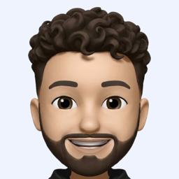
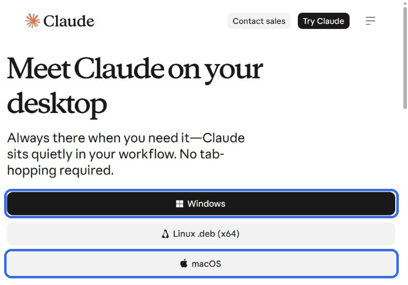

سه قدم ساده. همهی ابزارها رو خود Claude نصب میکنه؛ تو فقط کپی و پیست میکنی.
از سایت رسمی Claude نسخهی ویندوز یا مک رو دانلود و نصب کن، بعد با اکانتت وارد شو.
⬇ دانلود Claude دسکتاپ
هر پرامپت رو کپی کن، توی همون چت Claude پیست کن و Enter بزن. هر جا Claude سؤال پرسید، فارسی جوابش رو بده.
سلام Claude! میخوام همین پوشه رو به یه استودیوی ادیت ویدیو تبدیل کنی که باهاش ریلز اینستاگرام ادیت کنیم. من برنامهنویس نیستم، پس این قانونها رو همیشه رعایت کن: - با من فارسی و خیلی ساده حرف بزن. - هیچ دستوری رو از من نخواه که خودم تایپ کنم؛ همهچیز رو خودت نصب و اجرا کن. - قبل از هر کاری که اجازه لازم داره، توی یه جملهی ساده بگو برای چیه. - اگه جایی واقعاً کار من لازمه (مثلاً زدن Yes توی پنجرهی ویندوز، یا وارد کردن رمز کامپیوتر توی مک)، دقیق بگو کجا و چی رو بزنم. - اگه خطا دیدی، خودت علتش رو پیدا کن و راه دیگهای امتحان کن؛ فقط وقتی همهی راهها بسته شد از من کمک بخواه. کارهایی که باید انجام بدی: ۱. سیستمعامل و کارت گرافیک منو تشخیص بده (Windows یا macOS؛ کارت NVIDIA، تراشهی Apple Silicon، یا هیچکدوم). ۲. داخل همین پوشه این زیرپوشهها رو بساز (اگه از قبل هستن، بهشون دست نزن): Raw Footage (فیلمهای خام من)، References (ویدیوهای رفرنس)، Exports (خروجیها)، و یه پوشه به اسم .studio برای ابزارها و پروژهها. ۳. این ابزارها رو نصب کن. اگه چیزی از قبل نصبه، فقط نسخهش رو چک کن و رد شو. روی ویندوز از winget استفاده کن؛ روی مک از Homebrew (اگه Homebrew نصب نیست، اول اون رو نصب کن). - Node.js نسخهی ۲۲ یا بالاتر - Python نسخهی ۳.۱۱ یا ۳.۱۲ - FFmpeg - yt-dlp - Whisper برای زیرنویس فارسی: حتماً نسخهی چندزبانه (multilingual) رو نصب کن، نه مدلهای .en که فقط انگلیسیان. faster-whisper رو داخل یه محیط مجازی پایتون توی .studio نصب کن. اگه کارت NVIDIA دارم، مدل large-v3 رو روی GPU بذار (بهترین دقت برای فارسی). اگه GPU کار نکرد یا ندارم، مدل large-v3-turbo رو با int8 روی CPU استفاده کن. روی مکهای Apple Silicon، mlx-whisper با مدل large-v3-turbo سریعتره. زبان رو همیشه fa بذار و زمانبندی کلمهبهکلمه (word timestamps) رو روشن کن. مدل رو همین الان یک بار دانلود کن که موقع ادیت منتظر نمونم. - HyperFrames (ساخت ویدیو و موشنگرافیک با HTML): مهارتهای رسمیش رو برای خودت نصب کن با npx skills add heygen-com/hyperframes. اگه خطای git-lfs داد، Git LFS رو نصب کن و دوباره امتحان کن. بعد یه پروژه با npx hyperframes init داخل .studio/hyperframes بساز. - Remotion (ساخت ویدیو با کد): یه پروژهی خالی Remotion داخل .studio/remotion بساز. اگه مهارتهای رسمی Remotion برای Claude موجوده، اونها رو هم نصب کن. - فونت فارسی Vazirmatn رو دانلود کن و بذار توی .studio/fonts برای زیرنویسها. ۴. بعد از هر نصب، اگه ابزار هنوز پیدا نمیشه، مسیر کاملش رو پیدا کن و از همون استفاده کن، بهجای اینکه از من بخوای کامپیوتر رو ریاستارت کنم. ۵. همهچیز رو تست کن: - نسخهی هر ابزار رو چک کن. - مطمئن شو مدل Whisper لود میشه. - با HyperFrames یه ویدیوی ۳ ثانیهای عمودی (۱۰۸۰×۱۹۲۰) بساز که روش با فونت Vazirmatn نوشته «استودیوی ادیت من آمادهست ✅» و بذارش توی Exports به اسم test.mp4. ۶. یه فایل CLAUDE.md توی همین پوشه بنویس که دفعههای بعد بدونی اینجا چه خبره: - سیستم من، مسیر هر ابزار، و اینکه کدوم مدل Whisper انتخاب شد - نقشهی پوشهها - قانونها: همیشه فارسی و ساده حرف بزن؛ هیچوقت فایلهای داخل Raw Footage رو تغییر نده یا پاک نکن؛ خروجیها رو همیشه با اسم نسخهدار (v1، v2، …) توی Exports بذار؛ قبل از هر ادیت، taste.md رو بخون. ۷. در آخر یه گزارش کوتاه فارسی بده: چی نصب شد، چی از قبل بود، و چیزی مونده یا نه. بگو test.mp4 رو توی Exports باز کنم ببینم.
حالا میخوام سلیقهی ادیت منو یاد بگیری. اول CLAUDE.md رو بخون. ۱. ازم بخواه ۳ تا ۵ لینک از ویدیوهایی که استایل ادیتشون رو دوست دارم بفرستم (اینستاگرام، یوتیوب یا تیکتاک). صبر کن تا بفرستم. ۲. با yt-dlp دانلودشون کن توی References. اگه اینستاگرام اجازه نداد، با اجازهی من از کوکیهای مرورگرم استفاده کن (--cookies-from-browser). اگه بازم نشد، ازم بخواه خودم فایل ویدیو رو بندازم توی References. ۳. هر ویدیو رو دقیق بررسی کن: - با FFmpeg کاتها رو تشخیص بده و هر نیم ثانیه یه فریم دربیار؛ فریمها رو خودت نگاه کن. - با Whisper متن هر ویدیو رو دربیار. - اندازه بگیر و یادداشت کن: طول ویدیو؛ میانگین فاصلهی کاتها؛ هوک ۳ ثانیهی اول؛ استایل زیرنویس (جا، اندازه، رنگ، فونت، کلمهبهکلمه یا جملهای)؛ رنگها؛ زومها، حرکتها و ترنزیشنها؛ b-roll و گرافیکها؛ موزیک و افکتهای صوتی؛ ریتم کلی. ۴. یه فایل taste.md توی همین پوشه بنویس، با قانونهای مشخص و قابلاجرا (با عدد و مثال، نه کلیگویی). مثلاً: «تقریباً هر ۱.۸ ثانیه یه کات یا زوم»، «زیرنویس کلمهبهکلمه، سفید با کادر نیمهشفاف، وسط پایین تصویر». ۵. این قانون رو بالای taste.md بنویس و توی همهی ادیتها رعایتش کن: «از این ویدیوها الهام بگیر، کپی نکن. حس، ریتم و ساختارشون رو بگیر، ولی طراحی، متن، موزیک و هویت بصریشون رو عیناً تکرار نکن. چهره، صدا و برند من باید مال خودم بمونه.» ۶. سلیقهی منو در ۵ خط فارسی خلاصه کن و بپرس چیزی رو عوض کنم یا نه. هر تغییری گفتم، توی taste.md اعمال کن.
یه فیلم خام جدید گذاشتم توی Raw Footage. ادیتش کن. اول CLAUDE.md و taste.md رو بخون. ۱. جدیدترین ویدیوی داخل Raw Footage رو پیدا کن. به فایل اصلی دست نزن؛ فقط ازش بخون. ۲. با Whisper (زبان fa، زمانبندی کلمهبهکلمه) متن ویدیو رو دربیار. ۳. سکوتها، مکثهای طولانی و صداهایی مثل «اِ» و «امم» رو ببُر. اگه یه جمله رو چند بار گفتم، فقط آخرین نسخهی کامل و خوبش رو نگه دار. ۴. ویدیو رو عمودی ۱۰۸۰×۱۹۲۰ با ۳۰ فریم در ثانیه بساز، با HyperFrames یا Remotion (هرکدوم برای این کار بهتره): - زیرنویس فارسی کلمهبهکلمه، راستبهچپ، با فونت Vazirmatn و با استایل taste.md - زیرنویس و نوشتهها رو از ۱۲٪ بالای تصویر و ۲۰٪ پایینش دور نگه دار (اونجا رو دکمههای اینستاگرام میپوشونن) - زومها، b-roll، گرافیکها و افکتها طبق taste.md - موزیک: اگه توی References یه فایل صوتی هست که اسمش music داره، بذارش زیر صدای من و موقع حرف زدن آرومش کن. اگه نیست، بدون موزیک خروجی بگیر و بگو موقع پست کردن از موزیکهای خود اینستاگرام اضافه کنم. - صدا رو یکدست و تمیز کن (بلندی حدود -14 LUFS). ۵. خروجی رو با اسم نسخهدار بذار توی Exports (مثلاً edit_v1.mp4) و کنارش یه یادداشت کوتاه بذار که چه کارهایی کردی. ۶. بهم بگو ویدیو آمادهست و منتظر نظرم بمون. هر بازخوردی دادم (مثلاً «زیرنویسو بزرگتر کن»)، اعمالش کن و نسخهی بعدی (v2، v3، …) رو بساز. اگه بازخوردم یه سلیقهی ثابته (نه فقط مخصوص همین ویدیو)، به taste.md اضافهش کن.